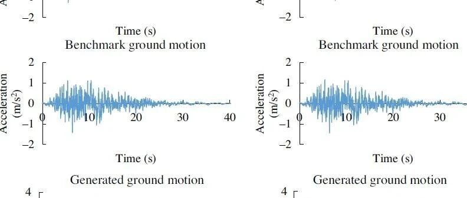

新论文：基于实测地震记录的区域地震动场模拟方法

论文链接：
https://pubs.geoscienceworld.org/ssa/bssa/article/doi/10.1785/0120200243/593868/Regional-Ground-Motion-Simulation-Using-Recorded
开源代码：
https://github.com/QingleCheng/Ground-motion-generation-using-CWT
我们课题组采用RED-ACT系统对国内外很多次地震的破坏力进行了评估，通过台站实测地震动记录我们可以得到每个地震台站的破坏力分布情况，例如图1给出的2019年宜宾地震的破坏力分布结果。该方法能够给出地震台站附件较准确的分析结果，但对于没有地震台站记录而人员密集的区域，由于缺乏记录难以确定其损伤情况，为此我们希望能够提出一种根据周边台站实测地震动推测未知点处地震动的方法，这便是本文工作的初衷。

图1 2019年宜宾地震破坏力计算结果
00
太长不看版
地震发生后可获取的地震台站记录仅能表征有限点位的地面运动特征。如果台站间距较大，台站间建筑分布形式差异大，缺乏符合城区当地特征的地面运动输入，将影响震害评估结果的可靠性，也难以满足精细化震害分析的需求。本文基于实测台站地面运动记录，提出了一套基于有限点位记录的区域地震动场模拟方法框架，并分析了该框架的适用条件。然后，采用清华校园案例开展分析，验证了上述框架的可靠性。最后，以旧金山市中心建筑遭遇Hayward断层M7.0级模拟地震为例，对所提出方法的具体实现流程和优势进行进一步说明。
01
研究背景
地面运动输入是开展城市抗震弹塑性分析（综述：城市抗震弹塑性分析及其工程应用）的重要数据。目前，地面运动输入主要是从强震台网获取的实测地面运动记录，或者由地震动传播模拟得到的地表地震动记录。一般而言，强震台站的密度有限，相邻台站间距大于10km，在这一距离范围内，大部分中小城市的建筑分布都会存在显著差别。但现有台站记录仅能表征有限点位的地面运动，缺乏符合城区当地特征的地震动输入，影响震害评估结果的可靠性。因此，根据已知台站的记录推测台站覆盖区域内的地面运动场对震害评估有着重要意义。目前，根据已知点地面运动推测未知点地面运动的方法主要有：(1) 基于地震学原理的物理驱动方法；(2) 相干函数法；(3) 基于地震动记录的插值方法。但现有方法在震后应急情况下，在区域建筑震害分析中的准确性和适用性有待进一步研究。
因此，本文基于实测台站地面运动记录，提出了一套基于有限点位记录的区域地震动场模拟方法框架，并分析了该框架的适用条件。然后，本文采用清华校园案例开展分析，对所提出的方法的具体实现流程和优势进行了说明。
02
提出的方法
根据已知数据推测未知数据最常用的方法之一就是插值了。我们在对比了地震动时域、频域上不同插值方法后，选定了两阶段的地震动构造方法。首先对地震动反应谱进行反距离权重插值(Inverse Distance Weight, IDW)确定目标点处反应谱，然后采用连续小波变换(continuous wavelet transform, CWT)根据插值得到的反应谱修正种子地震动，从而得到未知点处的地震动输入，所提出的方法的框架如图2所示。

图2 基于有限点位记录的地面运动场构造方法框架
2.1 反距离加权插值方法确定反应谱
本研究根据台站记录得到的实测地震动确定每个台站处的地震动反应谱，采用反距离加权插值方法计算得到未知点的反应谱，如以下公式所示：

基本思想是距离目标点越近，对目标点的贡献越大。
2.2 利用连续小波变换生成地震动
在确定未知点地震动的反应谱后，本文采用连续小波变换修正该未知点附近台站记录得到未知点地震动。该方法不仅能够生成与目标反应谱相近的地震动，还能保留地震动原始的特征、降低结构分析的不确定性。例如，对图3所示的目标地震动，在给定种子地震动和目标地震动的反应谱的情况下，通过连续小波变换方法可以得到修正后的地震动，可以看到该地震动反应谱与目标地震动反应谱吻合良好，并且地震动波形与目标反应谱也较一致。方法详细介绍可以参考原文，实现代码参见链接。

图3 连续小波变换应用示例
03
适用条件
上述方法虽好， 但也有一定的适用条件。
本文通过对日本地区33,702组实测地震动进行分析提出了该方法的适用条件。该方法在实际应用时需要按照如下步骤进行：
步骤1：建立未知点对应的插值台站组，需要遵循图2中所示的原则R1 ~ R4。对插值台站组确定与目标台站场地类别相同的周边台站数量ns，在运用本方法进行未知点地震动插值时，ns应尽量大，当ns < 2时不建议采用本方法；
步骤2：根据实际需求设定插值地震动精度目标，根据表1确定反应谱误差限值Et；
表1 给定P和y下的误差限值Et

步骤3：根据场地条件与距离，采用以下公式估算插值地震动的反应谱误差，并与步骤2中确定的误差限值比较，判断本方法对该插值台站组的分析结果是否符合目标要求。例如，未知点周围有4个台站和未知点场地条件一致，即ns= 4，当未知点到周边台站的距离均为8 km时，根据公式确定 Eˆt= 30.5。若实际精度目标需要保证y = 0.8, P = 80%，则根据表1确定 Et = 60，此时Eˆt< Et，满足需求，可以用于插值计算；

其中，d表示周边台站与目标台站的距离，i表示距离从小到大的排序，即0 < di ≤ dj (i ≤ j)；为插值误差的估计值，ns为与目标台站场地类别相同的周边台站数量。
步骤4：对于符合目标要求的插值台站组，对实测台站记录反应谱进行反距离加权插值，确定台站间未知点的地震动反应谱；
步骤5：选取插值台站组内距离未知点最近的台站记录作为种子地震动，根据步骤4得到的反应谱和连续小波变换修正得到未知点处的地面运动。
04
案例分析
既然是案例分析，怎么少得了清华校园。对，没错，还是清华校园。

图4 已知台站位置和建筑位置
本文以清华校园建筑为例，选择1679年三河-平谷地震的模拟地震动（案例区域距离模拟震中58 km左右）对所提出的方法进行验证。模拟情境可以提供清华校园内每栋建筑的地面运动输入，本文首先选取图4中四边形区域内的223栋建筑开展分析，建立Case TA，并假设只知道图4中四边形四个顶点处的地面运动，采用前文提出的方法插值得到四边形内部每栋建筑的输入用于地震响应分析。篇幅所限，具体步骤不再赘述。
对于四边形区域内部建筑，插值得到的每栋建筑物的地震动输入与目标地震动的误差如图5所示，误差小于误差限值（Et=46）的比例达到78.9%，说明了本文方法对无台站处点位地震动预测的适用性。典型台站插值反应谱与目标地震动反应谱对比如图6所示，可以看到，本文方法得到的地震动时程和反应谱与目标地震动较为接近。

图5 四边形区域内每栋建筑预测地震动的误差

图6 典型台站插值与目标地震动的时程和反应谱对比
同时，还构造了另外两组工况用于对比本方法的震损评价精度：
Case TB：只知道四个点的目标地震动（图4中四边形四个顶点），每栋建筑采用最近地震动作为输入，这是在缺少插值地面运动时常用的一种方法；
Case TC：每栋建筑输入各自所在位置处的目标地震动，可以认为是最为准确的结果。
采用城市抗震弹塑性分析方法计算每栋建筑的破坏情况。通过对比发现，对于四边形区域内部223栋建筑，Case TA和Case TB计算得到的建筑破坏状态与Case TC一致的比例分别为85.2%和80.7% ，这说明相比于传统的最近点输入方法，根据本文方法生成的地震动场预测的建筑震害结果更为准确，这对于提高震损评价结果的精度有着重要意义。
此外，我们还对Hayward断层M7.0级模拟地震开展了分析，研究了旧金山市区地震动场的构建及网格加密对震害分析结果的影响。详细内容可参见原文，这里不再过多介绍。
05
结论
本研究提出了一套基于有限点位记录的区域地震动场模拟方法，该方法基于实测台站记录反应谱利用反距离加权插值方法确定未知点地震动反应谱，根据未知点反应谱和连续小波变换修正未知点最近处台站记录得到未知点地震动；根据历史强震数据、插值误差定义和城市抗震弹塑性分析方法，分析了不同场地条件和距离下误差的大小，给定了本文地震动构造方法的适用条件。主要结论有：
(1) 提出一套基于有限点位记录的区域地震动场模拟方法，解决因为台站密度不足导致台站中间区域地震动难以确定的问题，为震后应急评估提供了重要输入信息；
(2) 给出了地震动误差与区域建筑震害的关系，进而确定了不同分析需求下的误差限值；
(3) 本文建议在运用所提出方法进行未知点地震动插值时，选取的周边台站场地类别应尽量与未知点场地类别相同。
可联系作者获取原文：
---End---

程庆乐
相关研究
新论文：抗震&防连续倒塌：一种新型构造措施
长按识别二维码，关注我们的科研动态